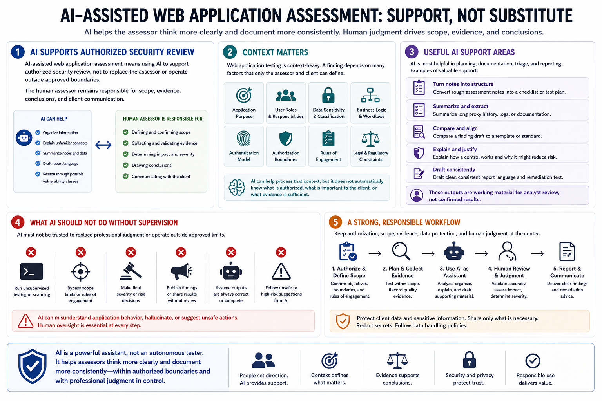

What Is AI-Assisted Web Application Assessment?
Connecting to LMS... Progress: in progress

Narration
AI-assisted web application assessment means using AI to support authorized security review, not to replace the assessor or operate outside approved boundaries. In a professional assessment, AI can help organize information, explain unfamiliar concepts, summarize notes, draft report language, and reason through possible vulnerability classes. The human assessor remains responsible for scope, evidence, conclusions, and client communication.
This distinction matters because web application testing is context-heavy. A finding depends on the application purpose, user roles, data sensitivity, business logic, authentication model, authorization boundaries, and the rules of engagement. AI can help process that context, but it does not automatically know what is authorized, what is important to the client, or what evidence is sufficient.
Useful AI support often appears in planning, documentation, triage, and reporting. For example, an assistant can turn rough assessment notes into a checklist, summarize a long proxy history, help compare a finding draft to a template, or explain why a control might reduce risk. Those outputs should be treated as working material for analyst review, not as confirmed results.
AI should not be trusted to run unsupervised testing, bypass scope limits, make final severity decisions, or publish findings without review. It can misunderstand application behavior, hallucinate, or suggest unsafe actions. A strong workflow keeps authorization, scope, evidence, data protection, and human judgment at the center. AI is useful when it helps the assessor think more clearly and document more consistently.